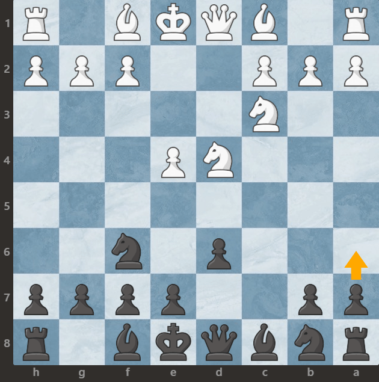

Wariant najdorfa
Obrona Sycylijska w wariancie Najdorfa to jedna z najbardziej popularnych i wysoce szanowanych opcji dla czarnych po posunięciach 1.e4 c5 2.Nf3 d6 3.d4 cxd4 4.Nxd4 Nf6 5.Nc3 a6. Nazwa tego wariantu pochodzi od argentyńskiego arcymistrza Miguela Najdorfa, który był jednym z pierwszych szachistów, którzy systematycznie stosowali tę linię obrony na wysokim poziomie. Kluczowym ruchem w tym wariancie jest posunięcie 5...a6, które przygotowuje ekspansję na skrzydle królewskim i umożliwia czarnym odbicie białego gońca z pola b5.
Oto kilka kluczowych cech wariantu Najdorfa:
1. **Atak na skrzydle królewskim**: Ruch 5...a6 to przygotowanie do posunięcia ...b5, co umożliwia czarnym ekspansję na skrzydle królewskim. Ten atak ma na celu rozwinięcie czarnych figur na skrzydle królewskim i rozpoczęcie aktywnego planu ataku przeciwko królowej białych.
2. **Solidna struktura pionowa**: Struktura pionowa składająca się z pionów na c5 i e6 tworzy solidną bazę, która zapewnia czarnym stabilność i kontrolę nad centralnymi polami planszy. Ta struktura umożliwia czarnym elastyczne rozmieszczenie swoich figur i przeprowadzanie kontrataków w odpowiednim momencie.
3. **Rozwój figur**: Czarne mają kilka opcji co do rozwinięcia swoich figur. Gońce mogą znaleźć się na g7 i e7, skoczkowie na f6 i c6, a hetman na c7 lub e7, zależnie od potrzeb sytuacyjnych.
4. **Potencjał tzw. baterii Najdorfa**: Głównym celem czarnych w wariancie Najdorfa jest stworzenie tzw. baterii Najdorfa, czyli połączenia gońca na g7 i hetmana na c7 lub e7, które może prowadzić do groźnych ataków na królowej białych lub rozwinięcia kontrataku w centrum.
5. **Elastyczność**: Obrona Najdorfa jest bardzo elastycznym otwarciem, które może prowadzić do różnych typów pozycji na planszy, w zależności od preferencji i stylu gry czarnych. Może to być dynamiczna gra na skrzydle królewskim, atak na królowej białych lub walka o kontrolę nad centrum.
Obrona Najdorfa jest popularna na wszystkich poziomach gry, od początkujących po mistrzowskie, ze względu na swoją elastyczność, dynamikę i bogatą historię sukcesów na najwyższych poziomach gry. Pozycje z tego wariantu są zwykle złożone i wymagają zarówno taktycznej precyzji, jak i strategicznego myślenia.
